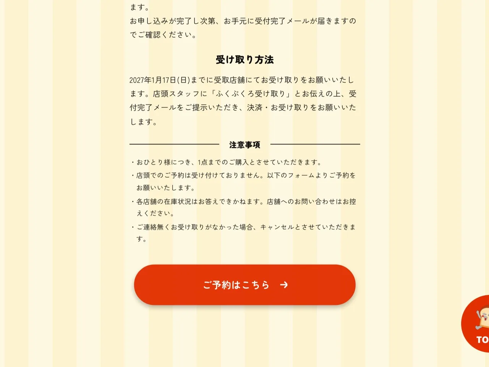

プロント福袋2027「2027ふくぶくろ」は、2026年12月20日まで公式フォームで事前予約を受け付けます。11月22日時点の案内では先着順で、予約分の上限に達し次第終了します。価格は6,000円（税込）。パンどろぼうのグッズ3点、ドリンクとパンのチケット、オリジナルPRONTOカードが入ります。
01事前予約は12月20日まで、店頭販売は2月15日まで
| 項目 | 公式の案内 |
|---|---|
| 事前予約 | 2026年11月15日10時〜12月20日。事前予約分の上限に達し次第終了 |
| 予約分の店頭受取 | 2026年12月26日〜2027年1月17日 |
| 店頭販売 | 2026年12月26日〜2027年2月15日。カフェタイム限定 |
| 販売対象 | 全国のプロントのうち、取り扱い店舗。1人1点まで |
事前予約分と店頭販売分には、それぞれ別に数量が用意されています。 どちらも先着順で、店頭販売分の取り置きは受け付けません。公式は各店舗への在庫の問い合わせを控えるよう案内しています。

02予約方法と店頭受取の手順
- 公式特設サイトの「ご予約はこちら」からフォームを開き、受取店舗を選んで申し込みます。
- 申込み後に届く受付完了メールを確認し、受け取るまで保管します。
- 12月26日以降、2027年1月17日までに指定した店舗に行きます。「ふくぶくろ受け取り」と伝えて受付完了メールを提示し、その場で代金を支払います。
商品を受け取るときに店頭で支払います。 受取りに行く前に、指定店舗のカフェタイムを公式の店舗情報で確認してください。

注意店頭での事前予約は受け付けていません。連絡なしに受け取らなかった場合はキャンセルになります。
03パンどろぼうのグッズとチケットの中身
| 品目 | 内容 |
|---|---|
| ふっくらキルティングトート | キルティング素材のバッグ |
| ゆらゆらコインケース | カラビナ付きのコインケース |
| くるくるポーチ | クラフト紙風素材のマチ付きポーチ |
| ドリンク300円OFFチケット | 8枚。1枚でドリンク1杯を本体価格から300円引き |
| パン引換チケット | 8枚。ドリンクを注文すると、1枚で本体価格500円までのパン1個と引換 |
| オリジナルPRONTOカード | 描き下ろしイラスト入り。残高0円で渡されるチャージ式カード |
ドリンクとパンのチケットは、どちらも2027年6月30日までです。 全国のプロントの対象店舗で、カフェタイムの注文時に提示します。ドリンク300円OFFチケットはドリンク1杯につき1枚で、セットメニューとの併用はできません。パン引換チケットはドリンクを1杯注文するごとに1枚使えます。
PRONTOカードは繰り返しチャージできるプリペイドカードです。全国のプロントマネー取扱店舗でチャージと利用ができます。
04よくある質問
プロント福袋2027は店頭で予約できますか？
予約は特設サイトから案内されるフォームで受け付けます。店舗では事前予約を受け付けていません。
予約分の受取時には何を見せますか？
指定した店舗で受付完了メールをスタッフに見せ、代金を支払います。予約分は2027年1月17日までに受け取ります。
店頭販売はいつまでですか？
公式発表では2026年12月26日から2027年2月15日までのカフェタイム限定で、店頭販売分は先着順です。予約分を受け取れるのは2027年1月17日までです。
パンだけを注文して引換チケットを使えますか？
パン引換チケットを使うにはドリンクの注文が必要です。ドリンク1杯につき1枚利用できます。
05まとめ
結論フォームでの事前予約は12月20日までで、上限に達し次第終了します。予約した方は12月26日から1月17日までに指定店舗で受け取ります。
店頭販売はカフェタイム限定で、公式発表では2027年2月15日までです。受け取りに必要な受付完了メールを保管しておきましょう。キャラクターを題材にした別の福袋はサンリオ福袋2027の案内も参照できます。